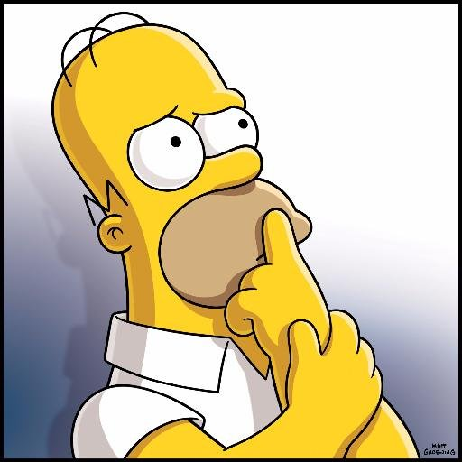

Пацанский клуб

Энди, Бретт, Лэндвулф и всем известный лягушонок Пепе – друзья-соседи, чья
жизнь полнится детской непосредственностью, безумной психоделией, праздным
гедонизмом, жопносортирным юмором и бессмысленной жестокостью. Мэтт Фьюри
рассказывает нам, как бы выглядела улица Сезам, окажись она квартирой
двадцатилетних бездельников. Вы без ума от комиксов Саймона Хансельманна
(«Мэгг и Могг») и Жоана Карнельи (Zonzo)? Вы никогда не восклицали
озадаченно «Что курил автор?» и открыты любой дичи? Скорее берите комикс
Пацанский клуб и знакомьтесь с ориджином любимого интернет-мемчика!